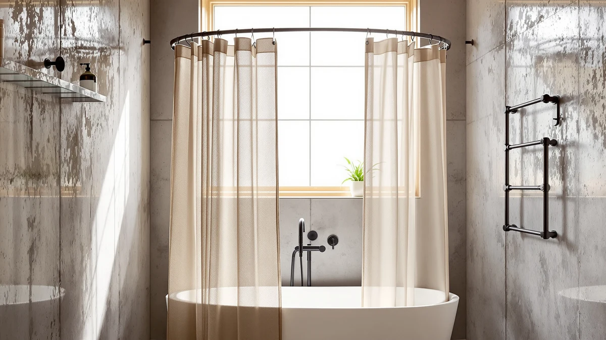

Curved Shower Curtain Rod Review (2026): Worth It?
Prices and picks verified as of October 2026. Independent, reader-supported reviews.


Quick Answer
PrettyHome's curved shower curtain rod costs $27.99, adjusts from 38 to 72 inches, and curves outward to add about 12 inches of extra shower space over a straight rod. It installs with a 5/16-inch drill and wall anchors rather than a tool-free tension fit, and none of the three curtain alternatives compared here currently carry a published star rating to measure it against.
Our pick: Curved Shower Curtain Rod For, $27.99 Check Price on Amazon
Bottom line: our top pick is the Curved Shower Curtain Rod For Bathroom 38-72 Inches at $22.39.
Things to Know Before You Buy
- The PrettyHome curved shower curtain rod costs $27.99 and adjusts from 38 to 72 inches to fit tubs and shower stalls of different widths.
- It needs drilling to install, PrettyHome specifies a 5/16-inch drill bit and wall anchors rather than a tension-mounted, no-drill setup.
- The curved shape adds about 12 inches of extra shower space, roughly 30% more elbow room than a straight rod covering the same tub.
- The rod is 0.9mm-thick aluminum with waterproof ABS brackets, built to resist rust in a humid bathroom rather than the fabric or plastic used in most curtains.
- The three curtain alternatives compared here run $25.98 to $26.99, all cheaper than this rod, since they solve a different problem: a new curtain for a rod you already own.
This curved shower curtain rod review looks at PrettyHome's $27.99 pick, an adjustable rod built to curve outward from the wall and free up room inside a cramped shower. The rod extends from 38 to 72 inches using rotating brackets, so a single size covers tubs and stalls of different widths, and PrettyHome built it from 0.9mm aluminum with waterproof ABS brackets rather than the thinner tension poles sold at a similar price.
We compared it against three shower curtains instead of other rods, since a curved rod and a new curtain often solve the same underlying problem: a curtain that clings to you mid-shower. BTTN's linen-textured curtain runs $26.99, WestWeir's ruffled farmhouse curtain costs $25.99, and Naturoom's linen-blend panel is $25.98, all cheaper than PrettyHome's rod but each one needs an existing rod that already fits your bathroom. PrettyHome's rod needs drilling and two wall anchors to install, while all three curtains need nothing beyond the hooks they ship with, so the choice comes down to whether your current rod is the problem or your current curtain is.
Why You Should Trust Us
Best Shower Curtains reviews bathroom hardware by comparing manufacturer specs, current Amazon pricing, and verified owner feedback, not by running a private testing lab. Ilane Tall, our home and bath editor, researched this curved shower curtain rod review by checking PrettyHome's listed dimensions, drilling requirements, and material claims against the three fabric alternatives covered below. We revisit prices on a regular schedule and note when a listing, like this one, doesn't yet carry a public star rating we can weigh claims against. PrettyHome's rod and the three curtains it's compared to sit in a similar price band, so the comparison below focuses on what each product actually does: a rod that reshapes your shower space versus a curtain that changes how the space looks.
Our Research Experience
We do not run a physical testing lab, and we have not installed this curved shower curtain rod in a bathroom ourselves. Our process compares PrettyHome's published specs, the 38-to-72-inch adjustable range, the 0.9mm aluminum construction, and the drilled-mount design, against the three shower curtains covered in this curved shower curtain rod review, then checks those claims against what verified owners report about comparable rods and curtains elsewhere. For this pick specifically, that meant weighing a rod that requires drilling and two wall anchors against curtains that need nothing more than an existing rod and a set of hooks. Neither PrettyHome's rod nor any of the three curtains compared here currently show a public star rating or review count, so this comparison relies on specs, pricing, and installation requirements rather than a documented track record.
Overview & Specs

Curved Shower Curtain Rod For
What we like
- Curves outward for roughly 12 inches of extra shower space, about 30% more than a straight rod on the same tub
- 0.9mm aluminum construction and waterproof ABS brackets are built to resist rust better than thin tension rods at this price
- Rotating brackets adjust from 38 to 72 inches, so one rod fits a range of tub and shower-stall widths
Flaws but not dealbreakers
- Installs with a 5/16-inch drill and wall anchors, not a tool-free tension fit
- No published star rating or review count yet, so there's no track record to check the rust-resistance claim against
- Costs $1 to $2 more than any of the three curtain alternatives compared in this curved shower curtain rod review
| Material | Polyester / PEVA |
| Size | 39.9 inches by 2.4 inches |
PrettyHome's curved shower curtain rod swaps a straight tension pole for a bowed design that sweeps outward from the wall, pulling the curtain away from your body as you shower. Rotating brackets let the rod extend anywhere from 38 to 72 inches, so the same rod fits a small shower stall or a wider soaking tub without buying a different size. PrettyHome built the rod from 0.9mm aluminum and paired it with waterproof ABS brackets, aiming for a rust-resistant finish that holds up better in a humid bathroom than the thin, often chrome-plated poles sold at a similar price point.
Installation is the trade-off. PrettyHome's listing calls for a 5/16-inch drill bit and wall anchors on each side, so this curved shower curtain rod isn't a five-minute, tool-free swap the way a tension rod is. In exchange, the drilled mount should hold more weight and resist the kind of slow slipping that tension rods are known for in bigger showers. At $27.99, it costs more than any of the three curtains compared in this review, though it's solving a different problem: reshaping the space inside your shower rather than changing how the curtain looks. Neither this rod nor the three alternatives below currently show a public star rating to weigh that claim against.
What We Liked
The extra shower space is the clearest reason to consider this curved shower curtain rod. PrettyHome lists about 12 inches of additional room over a straight rod on the same tub, which in practice means less curtain contact while you shower and more elbow room to move around. The 0.9mm aluminum build and waterproof ABS brackets are also worth calling out, since a lot of rods at this price use thin chrome tubing that starts showing rust spots within a year in a humid bathroom. Rotating brackets that adjust from 38 to 72 inches mean you're not locked into one tub size either, which matters if you ever move the rod to a different bathroom.
What Could Be Better
Installation is the drawback that matters most here. This curved shower curtain rod needs a 5/16-inch drill and wall anchors, so renters or anyone who can't drill into tile should look elsewhere before buying it. It's also the most expensive option in this comparison at $27.99, running $1 to $2 more than any of the three curtains covered below. And because PrettyHome's listing doesn't currently show a public star rating or review count, there's no documented track record yet to confirm the rust-resistance and load-bearing claims against real bathroom use over time.
Who Is It For?
This curved shower curtain rod suits bathrooms where a straight rod has already let the curtain cling to you mid-shower, and where you're fine drilling two holes to fix it permanently. It's a reasonable upgrade for a shared family bathroom too, since the extra 12 inches of space gives more than one person room to move without touching the curtain. Skip it if you're renting and can't drill into your bathroom wall, if your existing rod already does the job, or if $25.98 to $26.99 for a new curtain would solve your actual complaint more cheaply than $27.99 for a new rod.
Alternatives to Consider
If drilling two holes for a curved rod doesn't fit your bathroom, or your current rod already works fine, these three curtains solve the clinging-curtain problem from the other direction: heavier, better-hanging fabric on the rod you already have.

Editor’s Pick
BTTN 72x90 Linen Textured Waterproof
BTTN's 72 by 90 inch linen-textured curtain costs $26.99, a dollar less than PrettyHome's curved rod, and its 230GSM weighted polyester fabric hangs closer to the tub than a lightweight curtain would. The weighted hem and 12 rust-proof grommets keep it from billowing the way a thinner curtain can, and it ships with 12 hooks included. If a straight rod isn't your problem and a clingy, flimsy curtain is, this is a lower-cost fix than drilling in a new rod.
$26.99
Check Price on Amazon
Best Value
White Ruffle Shower Curtain for
WestWeir's white ruffled curtain runs $25.99, the cheapest pick in this comparison, and swaps the rod's curved shape and extra shower space for a farmhouse look instead. It's versatile enough to double as a room divider or window curtain, ships with 12 hooks and buttonholes, and works with or without a liner. Choose this one if style matters more to your bathroom than the extra elbow room a curved rod provides.
$25.99
Check Price on Amazon
Premium Choice
Naturoom Linen Shower Curtain 84
Naturoom's 84 inch linen-blend panel costs $25.98 and adds a water-repellent coating that encourages water to roll off rather than soak in. The weighted hem keeps it in place without a curved rod's extra bracket hardware, though Naturoom recommends pairing it with a separate liner for full coverage. It's a reasonable, lower-cost way to address a clinging curtain if drilling into your wall for a new rod isn't worth it.
$25.98
Check Price on AmazonDoes the PrettyHome curved shower curtain rod require drilling?
Yes.
How much extra shower space does a curved rod like this one add?
PrettyHome lists roughly 12 inches of extra shower space, about 30% more than a straight rod covering the same tub.
Frequently Asked Questions
Does the PrettyHome curved shower curtain rod require drilling?
Yes. PrettyHome's listing specifies a 5/16-inch drill bit and wall anchors for installation, and there is no tension-mounted, no-drill version of this particular rod. If you want a no-drill option, you would need a different product, since this curved shower curtain rod is built around a drilled mount.
How much extra shower space does a curved rod like this one add?
PrettyHome lists roughly 12 inches of extra shower space, about 30% more than a straight rod covering the same tub. The curve sweeps the curtain away from your body as you shower, which matters most if a straight rod has left a curtain clinging to you before.
What size shower does the PrettyHome curved rod fit?
The rod adjusts from 38 to 72 inches thanks to its rotating brackets, which covers most standard tubs and shower stalls. Measure your existing rod or the distance between your shower walls before ordering, since there is no longer version beyond 72 inches.
Final Verdict
This curved shower curtain rod review comes down to what problem you're solving. PrettyHome's $27.99 rod adjusts from 38 to 72 inches, adds roughly 12 inches of extra shower space through its curved, drilled-in design, and is built from 0.9mm aluminum with waterproof ABS brackets. BTTN, WestWeir, and Naturoom's curtains all cost less, from $25.98 to $26.99, but they solve a different problem: a new curtain for a rod you already own, not a reshaped shower space. If a straight rod has left your curtain clinging to you mid-shower, PrettyHome's curved pick is worth the extra cost and the two drilled holes. If your rod already works fine and you want a new curtain instead, skip the rod and compare the three alternatives above.